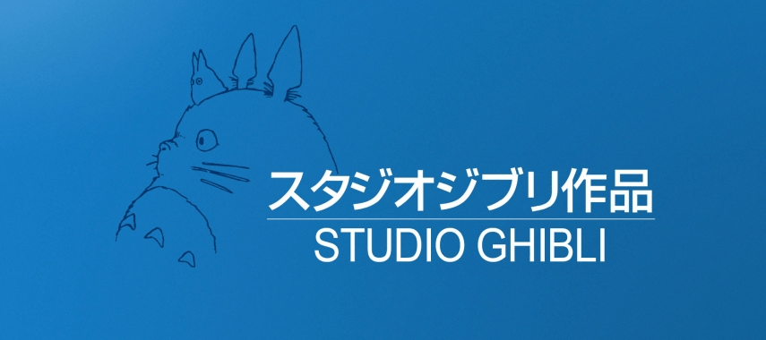

Fundação
A Fundação do Studio Ghibli
Hayao Miyazaki, Isao Takahata e Toshio Suzuki uniram-se para fazer filmes animados do jeito que quisessem fazer. Assim, o primeiro filme do Studio Ghibli, que estreou em 1986, foi O Castelo no Céu levando 775 mil pessoas aos cinemas – um sucesso de bilheteria e de crítica. Sempre inovando, 2 anos depois, o Studio Ghibli surpreendeu mais uma vez lançando dois filmes ao mesmo tempo. Para muitos estúdios esse desafio seria impossível de se cumprir sem comprometer a qualidade da animação ou a gestão dos recursos, mas Meu Amigo Totoro, dirigido por Hayao Miyazaki, e Túmulo dos Vagalumes de Isao Takahata, se tornaram obras primas consideradas por muitos os melhores filmes do Studio Ghibli até hoje. Atualmente o logo do Studio Ghibli é o perfil de Totoro, personagem principal do filme.

voltar